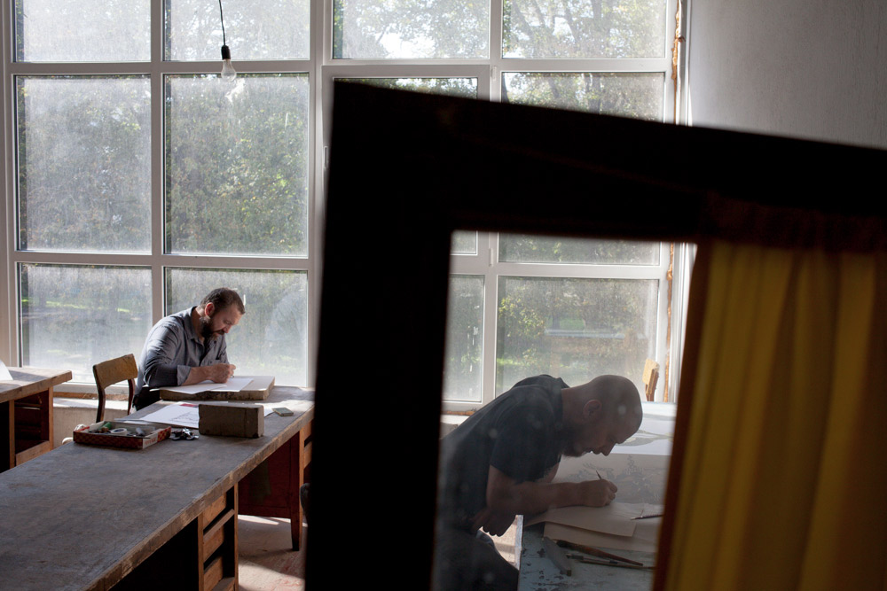
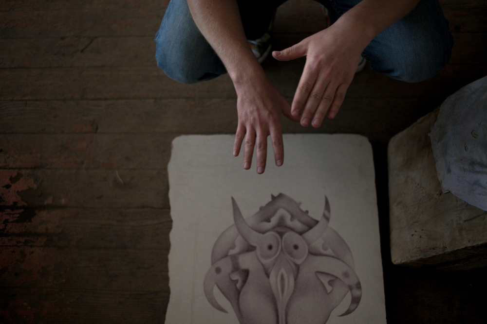
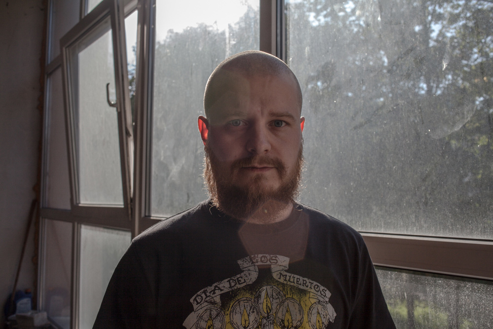

В то время как беларуская общественность всё ещё ведёт споры о том, какой художник настоящий — тот, кто бедствует в подвалах от непризнанности, или тот, кто пытается себя продвигать и продавать, — Европа задаётся вопросами совершенно другого порядка. Например, проблемой демократизации искусства: поиском концептуального подхода, который смог бы приблизить любого человека к высокому искусству. Искусствовед Мария Ковалевская считает, что изобразительной техникой, способной решить такую задачу, сегодня является принт, картинка, перенесённая на бумагу или ткань посредством одного из видов печати: будь то шелкография, гравюра, офорт или самая трудозатратная из них — литография. В Беларуси одним из мастеров, работающих с литографией, является художник Андрей Ярошевич. И именно в его мастерскую я отправилась, чтобы поговорить об особенностях древней технологии, причинах элитарности жанра и творчестве самого графика, чьё имя часто появляется на афишах рядом со словом «шаман».
«АНДРЕЙ, ВЫ ШАМАН?»
Знакомство с графиком Андреем Ярошевичем началось со ссылки на интернет-новость о том, что Дэвид Линч заинтересовался искусством печати литографических оттисков и посвятил технике 7-минутный фильм. Андрей просил ознакомиться с этим материалом перед интервью, чтобы избежать пространного монолога о секретах печати. Если честно, фильм я не посмотрела. И, вообще, не очень хотела вдаваться в технические вопросы литографии. Мне представлялся гораздо более интересным разговор о рынке и востребованности такого элитарного с точки зрения доступности материалов искусства, а в содержательном аспекте — о причине и природе мистической символики, которую транслирует Андрей. Его работы, наполненные эротикой и мистическими символами, которые отсылают к запредельным мирам вне времени и места, действительно изобилуют магией и свободой. Поэтому, очутившись в стерильно белой мастерской под крышей знаменитого дома со скульптурами напротив железнодорожного вокзала, я первым делом спрашиваю: «Андрей, а Вы действительно шаман?»
«Мне можно задавать вопросы про шаманство, но я не шаман, — прячет в рыжей бороде улыбку художник. — Я обычный среднестатистический человек! Но если творческая личность верит в существование иной реальности, она с ней всегда будет иметь какую-то связь, если относится к себе чутко и осознанно. В таком смысле все люди шаманы. А если люди замыкаются на уровне «заработать бабла и отдохнуть», то тут другое… Пожив пару месяцев в деревне со всеми удовольствиями вроде прогулки по лесу, купания, сидения у костра, начинаешь чувствовать мир по-другому. Помню, у Бориса Гребенщикова в интервью спросили: «Скажите, как прийти к Богу?» А он ответил: «Вы лучше мне объясните, как от него уйти!» Так и здесь. Невозможно отделиться от этого — и всё. Можно заблокировать себя, ограничить, но заявлять: «Я не часть мира» — глупо. А чего тогда ты часть, если не мира?»
«Моя магия начинается, когда я приступаю к работе, — говорит Андрей. — Это как аппетит, который приходит во время еды. Берёшь литографский карандаш, начинаешь касаться поверхности камня, обрабатывать её… Я не выбираю технику, мне важен процесс самого творчества, в узком смысле — рисования. Я вижу эстетику в технике литографии и получаю удовольствие от работы с камнем: от подготовки камня, его шлифовки, приладки на станке».
ЗАПОЛНИТЬ ПУСТОТЫ
Часть «магии» в творчестве Андрея Ярошевича — это необычный визуальный язык, которым график овладел в совершенстве. В его оттисках и карандашных рисунках необыкновенно трепетное отношение к деталям, мистика выбранных образов, свободная, смело смешивающая символы разных культур, орнаменталистика. Художник признаётся, что интерес к разнообразию культур, особенно к первобытной, появился ещё в годы учёбы в Академии искусств:
«В юности я читал много книг, связанных с первобытным искусством. Меня привлекал именно этот пласт прежде всего в плане культуры и истории.
Понятно и логично, что у всех народов на земле много общего. Основные понятия, темы переходят от одних к другим. И нельзя сказать, что символика древнего индуса, грека или беларуса имеет значительные отличия. Основа общая. Поэтому я позволяю себе достаточно свободно вводить элементы любых культур и пытаюсь соединять их в одно целое».
Увлечение этникой не могло не привести к необходимости пристально взглянуть и в беларускую культуру. Однако там Андрея ждало разочарование.
«Мне не хватало визуальных образов. Да, есть разнообразная литература, многочисленные статьи, но вот где изображение? Что я могу посмотреть? Открываешь книги по беларускому язычеству, а там только текст. Кажется, что в других культурах есть всё, а у беларусов как будто ничего и нет. К примеру, новозеландский абориген. Его культура имеет яркое визуальное представление, она привлекательна. Копнёшь в Болгарии где-нибудь землю и получаешь доступ к целому богатому периоду, а у нас костяная фигурка лося, да и то не фигурка, а крохотный кусочек от неё. Сидишь тогда и думаешь: что ж это она из себя представляла целиком? Приходится восполнять. Я воспринимаю свои произведения как беларуские. Это моя попытка заполнить образами недостаток визуальности, которой мне не хватает в беларуской архаике».
САМОЦЕНЗУРА И ЭРОТИКА ПО-БЕЛАРУСКИ
Символика Андрея Ярошевича, особенно если рассматривать её в поле беларуского искусства, кажется более, чем смелой. Антропоморфные существа его вселенной демонстрируют гипертрофированные гениталии с естественностью, присущей скорее искусству первобытных времён.
«Почему у меня много гипертрофированных органов в работах? — переспрашивает Андрей. — А беларуский фольклор без цензуры кто-нибудь читал? Тема эротики там является фактически основной. Избегать темы эротизма было бы не то, что глупо — это было бы кощунственно! Избегая её, мы заведомо исключаем самую суть.
Что в любой исторической эпохе интересовало людей? Три темы: спариться, покушать и похоронить. Война — она же для чего? Чтобы тебе было что покушать, было с кем спариться и было место, где хоронить. Только потом шли наслоения, которые косвенным образом касались тех самых центральных тем, вырастая в некую «высокую духовность».
Простота и естественность объяснений, тем не менее, не всегда убедительны для государственных институций, с которыми художник пытается сотрудничать касательно выставок. Часто заинтересованные его графикой директора после просмотра большего числа работ отказываются формировать экспозицию. «Площадка-то государственная, здесь дети ходят! — объясняют они. — Котика-женщину можем взять, а вот медведя и быка — нет».
Рассуждая на тему особенностей национальной самоцензуры, Андрей отмечает: «Почему-то, когда рисуешь женские половые органы, все спокойны и радостны. Стоит нарисовать член, общество начинает неловко ёжиться. У организаторов-мужчин будто происходит отторжение собственного тела.
По уровню эстетической ценности я ставлю оба пола на одну планку. В жизни мне приятнее общаться с женщинами: если в метро будет свободное место рядом с мужчиной и женщиной, я, конечно, сяду рядом с женщиной. Но на уровне эстетики, символов, визуального восприятия оба пола такие классные! Как можно решить, что женские половые органы рисовать разрешено, а мужские — нет? Это же издевательство! А где же равенство полов?»
ЭЛИТАРНОСТЬ VS ДЕМОКРАТИЗАЦИЯ
Возвращаясь к технической стороне творчества, Андрей Ярошевич с лёгкостью соглашается, что трудозатратные ручные технологии обычно отталкивают. Думаю, даже не подкованному в литографии ясно, что этот процесс не под силу большинству художников. Дело даже не в сложности этапов подготовки камня и невозможности освоить работу на станке в домашних условиях. В эпоху, преподносящую на блюдечке все цифровые технологии получения высококачественного изображения, сознательное помещение себя в жёсткие рамки удивляет.
Андрей вспоминает, что в свою бытность второкурсником экспериментировал, выполняя задания в самых разных техниках. А на четвёртом курсе пришёл к выводу, что никогда не станет заниматься литографией.
«Во время учёбы я относился к литографии, в общем-то, формально. Но однажды попал к легендарному мастеру-печатнику Дмитрию Васильевичу Молоткову. Благодаря ему, я увидел другую литографию: с более качественной печатью и расширенным спектром возможностей, сопряжённых с печатью на офсетном станке художественного комбината, где работает Молотков», — рассказывает Андрей.
«Печать литографии — это серьёзный физический процесс. Это основательная подготовка камня, его шлифовка, травление, приладка на станке, подбор краски — множество нюансов, которые художник часто не в состоянии знать, потому что он всего лишь художник. Ему нужен мастер. Два года я помогаю Молоткову, и с каждым месяцем всё чётче понимаю, что литография — такая бездна! Целой жизни может не хватить, чтобы добиться того, что умеет он. И пока есть возможность заниматься литографией, надо ею пользоваться.

В Академии мы работали на ручном литографском станке. Процесс был связан со многими техническими сложностями. Во-первых, камень, на который накатывается изображение, должен быть очень ровным. Чтобы изображение равномерно снималось на бумагу, он должен быть идеально отшлифован. Ручной станок всегда даёт разные оттиски: где-то валиком недокатал, где-то пережал и т.д. Офсетный станок позволяет накатать ровный слой краски, поэтому портится гораздо меньше бумаги, и её не надо увлажнять.
Более того, при работе с офсетным станком получается прямое изображение. С ручным станком, как с гравюрой: изображение на пластине зеркальное. Со временем можно наловчиться, но постоянно рисовать перевёрнутую картинку, с зеркалом или без, сложно. На комбинате станок немножко переделан, приспособлен для печати камней. Можно даже без эскиза начать рисовать так, как ты привык рисовать на бумаге, и финальная работа будет в таком же виде. Ещё один плюс — это форматы. Камни больше, соответственно, работы больше, и приятно, что можно размахнуться».
Андрей Ярошевич считает, что литографией не только в Беларуси, но и в мире, занимаются люди, которые «кайфуют от трудозатратности». И таких людей не очень много. «Во всём мире литография сейчас перешла на уровень элитарного искусства», — отмечает он и поясняет, что под элитарностью имеет в виду, что от заинтересованного литографией требуются не только эстетические, но и интеллектуальные усилия.
«Гораздо больше людей, которые поймут и оценят живопись или офорт, чем литографию. Потому что живопись эффектна, понятна, привычна для восприятия, а над литографией всё-таки надо подумать. Эта техника на самом деле элитарна, потому как (плохо это или хорошо) 98% людей, глядя на литографию, не поймут, как она сделана. А те, кто способен понять, не смогут не оценить, какой за этим оттиском лежит громадный трудоёмкий процесс».

В таком контексте возникает вопрос: кто же составляет те самые 2% способных насладиться литографией в формате домашней коллекции? Другими словами, вопрос существования и развития рынка графики в Беларуси, осмысления элитарного и превращения его в демократическое. Адресуя его Андрею, я заранее знаю ответ, но спокойствие художника даже удивляет.
«В Беларуси вообще нет арт-рынка, поэтому как может развиваться отдельный его сегмент, если не существует целого? У нас достаточно варварски, спонтанно, через третьи руки кто-то узнаёт и может заинтересоваться, находит какие-то знакомства. Определённое движение существует, но сказать, что литографы купаются в славе, я не могу. К ним не идут поклониться и сказать: «Ой, ребята, какие же вы клёвые! Вы работается в технике ХVIII века, и за эти два с половиной века научились печатать лучше!»
Но меня раздражает, когда художники начинают жаловаться, что у них ничего не покупают, что денег нет. Ну и хер с вами, что у вас ничего нет. Разве вы не сами сделали этот выбор? Искусство — это вид наркотика. Как адекватный художник может перестать заниматься искусством? Это как если бы здравомыслящий алкоголик перестал пить — что за бред? Так и с искусством: ты либо ноешь и рисуешь, либо не ноешь и рисуешь. Если ты позволяешь себе роскошь 5 часов в день рисовать девочку карандашиком, то должен осознавать, насколько свободен.
Хотел бы я, чтобы у нас был арт-рынок? Я бы хотел, чтобы у нас покупали работы. Но когда встречаешь людей, которые заключили контракты с иностранными галереями, и слушаешь их рассказы, о том, сколько они должны сделать работ за год и на какую, затребованную галереей, тему, то думаешь, как же тебе прекрасно живётся. Рисуешь, что хочешь, когда хочешь и сколько хочешь. И в любой технике. В такие моменты понимаешь, что арт-рынок — это не весело. С другой стороны, когда нечего кушать, то приходит мысль, что твой «подвиг» никто не оценит и денег за это не даст. Тогда я начинаю хотеть арт-рынок».

Когда разговор заходит про иностранные платформы, Андрей начинает светиться гордостью: именно там, судя по всему, и получают признание, там устанавливается адекватный диалог с понимающими те процессы, которые предшествуют появлению на свет графического принта.
«Да, в наибольшей степени литография и гравюра оцениваются иностранными коллекционерами, — говорит художник. — Я даже могу открыть страшную тайну: современная беларуская литография находится на очень высоком уровне. Я не раз был свидетелем того, что иностранцы не могли понять, как та или иная литография была сделана. Месяц назад был случай, когда скульптор Анна Старовойтова сделала выставку литографии в Польше. Польские студенты-графики отказывались верить, что это была литография. «Это компьютерная распечатка! Ты нас обманываешь!» Потому что технический уровень у них, мягко говоря, отстаёт. Я отнюдь не имею в виду, что так происходит во всей Европе. Франция, Бельгия, Япония, Индия — везде есть литографские мастерские и достойные представители. Но если взять среднестатистические образцы беларуской литографии и такие же европейские, то мы выглядим действительно очень круто!»
Разговор с Андреем активизировал вопросы для беларуского искусства уже почти прозаические: высокий технический уровень, смелость и оригинальность подачи, которые сталкиваются с невостребованностью в стране; авторское переосмысление традиций европейской литографии — с самоцензурой и узостью взглядов публики. Беларусы сегодня оказываются просто не готовыми интеллектуально и эстетически оценить искусство, выходящее из привычной зоны комфорта: реалистических пейзажей маслом и соломенных фигурок. Может быть, нам пока не хватает чуткости и осознанности, о которых говорит Андрей Ярошевич. Ощущений других слоёв реальности.